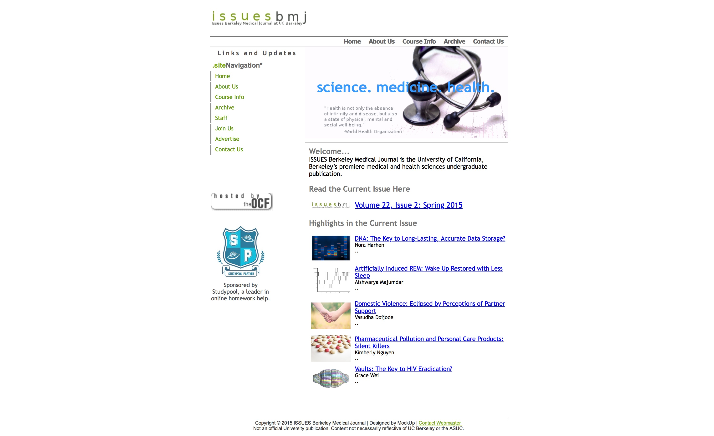
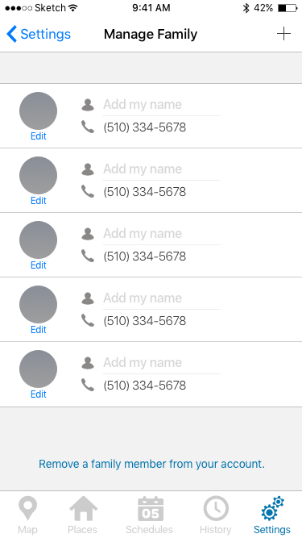
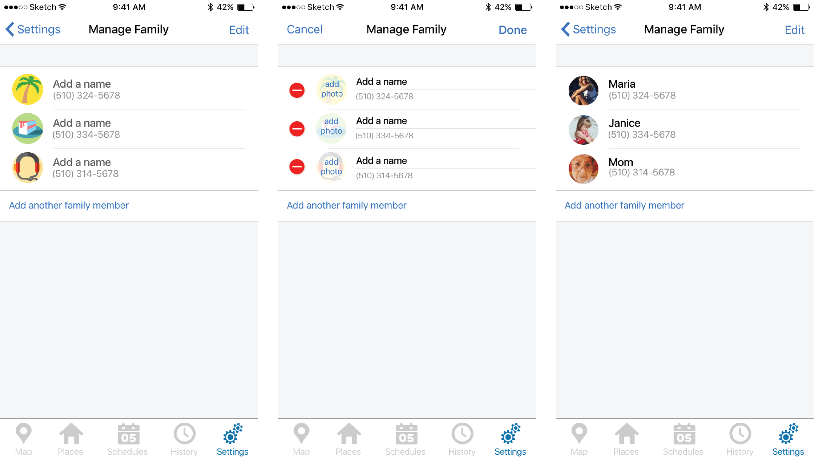

The website was in need of a new coat of paint as it had been some time since it was updated and it no longer appealed to its target audience — college students. There were also some blatant navigation issues.
With this first iteration, my goal was to improve the UI so that it would enable an increase in the number of names and photos being added in the app . To achieve this, I added "edit" labels under each family member's photos and added "Add my name" hint labels in a form-like UI to provide clear calls to action . Additionally, to prevent the user from having to go back and forth between screens, I combined all of the user's family member info onto the same screen to reduce time spent inputting information .
After presenting my design to engineers, product managers, and other designers, as well as testing the app during the design team's user testing sessions (where we recruited testers from outside the company), a few concerns were brought up: Are we straying too far from common, existing UI patterns? Is it clear enough that the name fields are editable? Will I accidentally edit a name I already inputted?
Taking in the feedback, I proposed another design aimed to address these concerns. The biggest change to this iteration is the introduction of the "Edit" button on the top right of the screen. This "Edit" button is aligned with commonly existing UI patterns, such as Apple's Contacts app, and creates a barrier to mutability, which safeguards against accidentally editing fields.
Another concern that was brought up during the critique and review process was: Why don't we just modify our existing screens instead of geting rid of what we have already and creating a new screen?. There were a number of reasons for why we decided to go with my proposed design. First off, I had spoken with one of the engineers behind the app and he assured me that my proposed design would be a quick fix and shouldn't take more than two days, which was good since it was less than engineering time that our product manager had alotted. Second, although it is more common to go into each profile individually to edit their information (as in Apple's Contact app), rather than have all the profile info in one long form as in my proposed design, I believed it was necessary to break away from traditional UI patterns since our content was unique . It wasn't necessary for us to have a whole screen dedicated to one family member profile, since the only information we had for them were their name, photo, and associated phone number (which the user can't even edit). Therefore, in order create a faster editing experience, it made more sense to combine all the profiles into one screen.
While in the ideation phase of my process, I also explored alternative ways our users could change their family members' photos, and I came up with the design below. The goal of this design was to make the photo uploading process faster, since it could be an arduous process of the user has a lot of family members to upload pictures for. This design need was not a priority at the time and was not explored further.